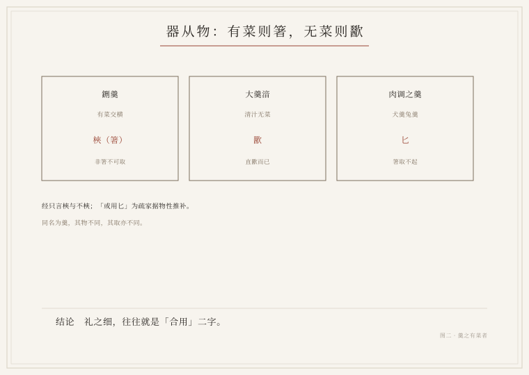

曲礼上 · 一·八十三 · 第 81 课
羹里有菜，须用梜（箸）取；无菜的羹，不用梜，直歠而已。一句话把「器随物变」讲尽。
说什么事：羹之有菜者用梜，其无菜者不用梜。
落在哪一层：仪。用器之法。
为何编在此位：上两节论辞与不辞，此节转到食器之用，是饮食细目的收束。
【经】羹之有菜者用梜，其無菜者不用梜。
【注】梜猶箸也。今人或謂箸為梜提。
羹 有两类：有菜之羹（鉶羹），无菜之羹（大羹湆）。
梜 注「梜犹箸也」；疏引《字林》作筴，云「箸也」。今语即筷子。
有菜者 疏「有菜者为鉶羹是也，以其有菜交横，非梜不可」。菜横于羹中，非箸不能取。
无菜者 疏「无菜者谓大羹湆也，直歠之而已」。湆是煮肉之清汁，无菜可夹。
有肉调者用匕 疏「其有肉调者，犬羹兔羹之属，或当用匕也」。
羹中有菜的，用箸取食；没有菜的，不用箸，直接饮汁。
一节讲器物与食物的配合。用箸不是礼数多，是无菜则无所用箸；用匕不是讲究，是有肉则箸取不起。礼之细，往往就是「合用」二字。
第一层 器从物 有菜交横，箸才能取；无菜则箸无用武之地。器不是身份的标记，是应付物的手。
第二层 羹有两等 鉶羹有菜有肉，大羹湆为清汁。同一名「羹」，其物不同，其取亦不同。
第三层 匕之别出 疏补一句：有肉调的羹或当用匕。经只言梜与不梜，疏把匕也纳入，是据物性推求。
第四层 礼在不勉强 无菜之羹而强用箸，是做一个取食的样子。礼恶其虚。
与今日何干 清汤不用筷子搅，带菜带面的才用箸；喝汤用勺，取块用箸。此节今日仍在每一张餐桌上。
| 左 | 右 |
|---|---|
| 羹 | 有菜之鉶羹，无菜之大羹湆 |
| 梜 | 箸，今或谓梜提 |
| 有菜者用梜 | 菜交横，非箸不可取 |
| 无菜者不用梜 | 清汁直歠，箸无所用 |
| 有肉调者 | 犬羹兔羹之属，或用匕 |
| 器从物 | 礼在合用，不在多用 |
画两器并置：左为一只盛羹之鼎，羹面浮着数茎菜叶、交错横陈，鼎旁横一双竹箸；右为一只清汁之器，汁面平净无物，器旁无箸，只有一只小匕。不画人、不写文字。赭色只在菜叶一二处。
